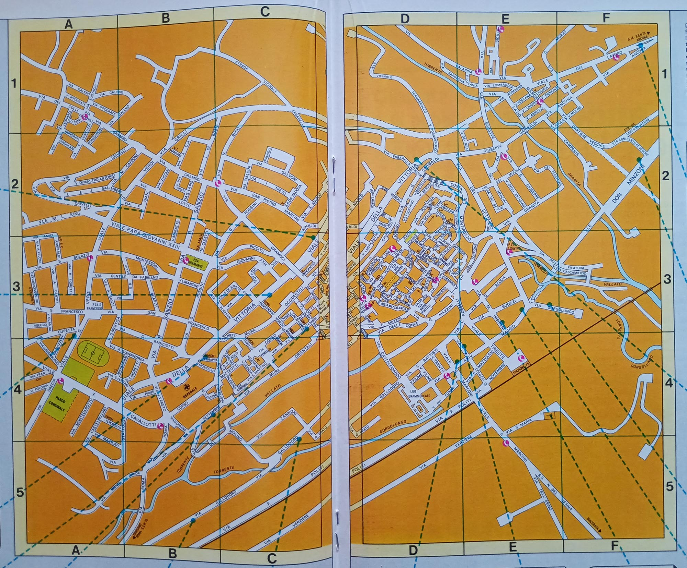
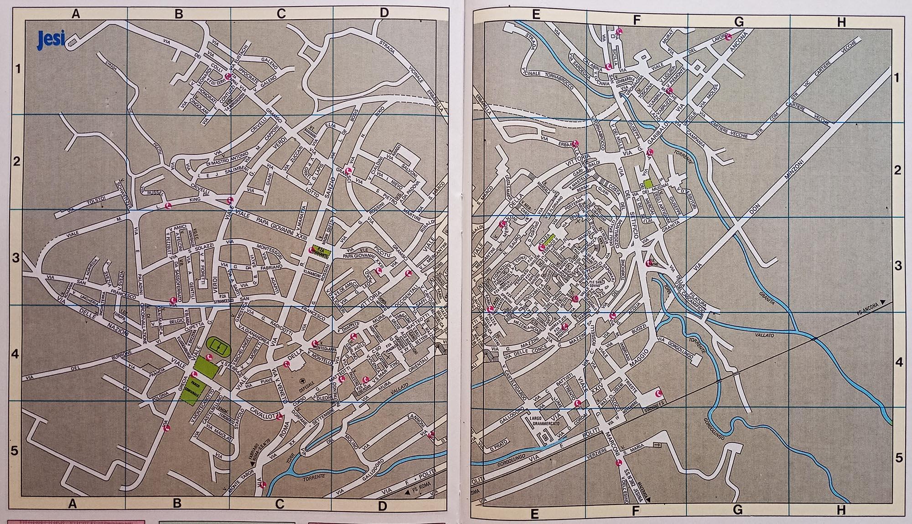
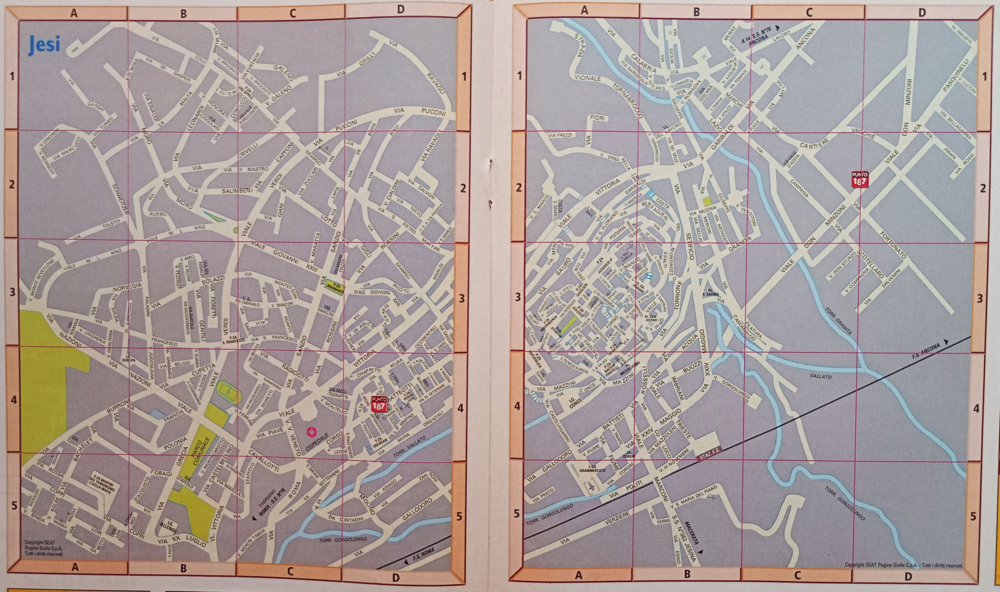
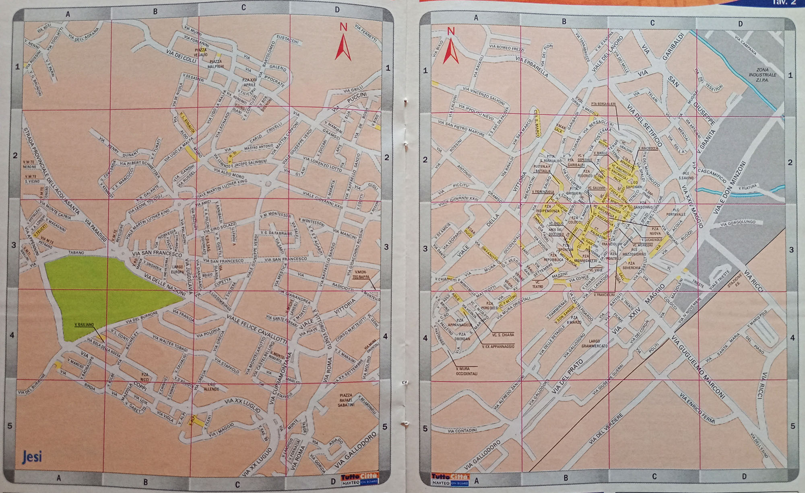
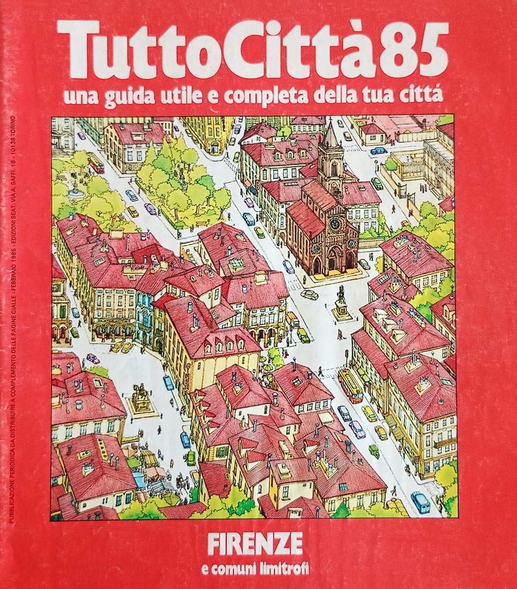
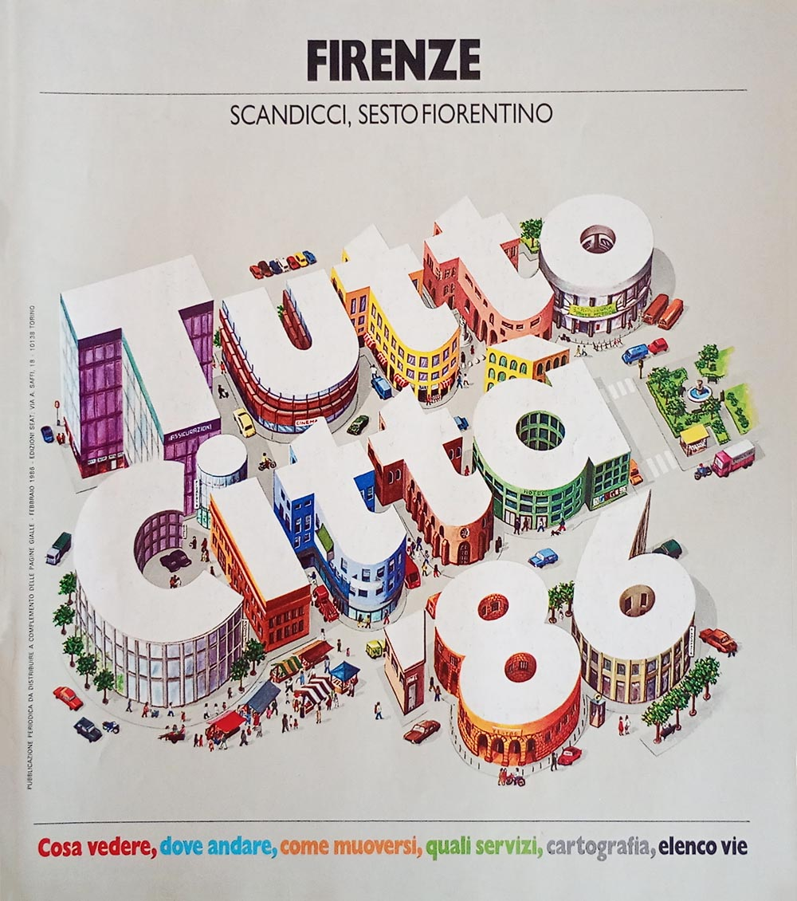

L'evoluzione delle tavole cartografiche
La cartografia di TuttoCittà cambiò colore di stampa quattro volte in trent'anni. Il modo più diretto per vederlo è seguire la stessa città attraverso le quattro fasi: qui è Jesi, in provincia di Ancona, presente nei fascicoli fin dalle prime annate.
Le immagini sono ritagliate sulla sola area cartografica. I bordi delle tavole ospitavano le inserzioni pubblicitarie degli esercizi locali, che non hanno rilievo per il confronto e che avrebbero introdotto nomi, indirizzi e recapiti di attività d'epoca senza alcuna necessità documentaria.

Tavola topografica di Jesi
tratta dal fascicolo Ancona - Pesaro - Urbino 82
annata 1982/83

Tavola topografica di Jesi
tratta dal fascicolo Ancona 90/91
annata 1990/91

Tavola topografica di Jesi
tratta dal fascicolo Ancona 2004
annata 2004/05

Tavola topografica di Jesi
tratta dal fascicolo Ancona 2009/2010
annata 2009/10
| fase | colore delle tavole | dalle annate |
|---|---|---|
| Arancione | 1981/82 → 1989/90 | |
| Grigio | 1990/91 → 1999/00 | |
| Grigio cromatico | 2000/01 → 2008/09 | |
| Rosa | 2009/10 → 2014/15 |
Le quattro fasi cromatiche
Le date indicano la fase prevalente: il passaggio non fu simultaneo per tutte le edizioni, e nell'annata
2000/01 le due tinte grigie convivono, così come nell'annata 2009/10 convivono grigio cromatico e rosa.
Il dettaglio per singola copertina è in copertine_per_annata.csv.
La riforma cartografica delle dieci città maggiori
Il colore non è l'unica cosa che cambiò. A metà dell'annata 1985/86 le tavole delle dieci città maggiori d'Italia secondo il censimento del 1981 furono ridisegnate da capo, e fu il cambiamento più profondo che la cartografia di TuttoCittà abbia conosciuto.
Fino ad allora quelle tavole derivavano dai vecchi stradari SEAT sviluppati all'inizio degli anni settanta e inclusi nelle Pagine Gialle. La loro organizzazione procedeva dalle zone centrali verso le aree periferiche in modo disomogeneo, e porzioni diverse della stessa città erano spesso rappresentate a scale differenti: confrontare due tavole contigue non era immediato.
Dalla seconda metà dell'annata 1985/86 l'impianto fu riorganizzato su basi razionali. La successione delle tavole segue l'andamento da nordovest a sudest, e le scale si riducono a poche misure fisse, di norma da due a quattro per l'intera città. Il quadro d'unione, cioè lo schema che mostra come le tavole si dispongono sul territorio, rende la differenza evidente a colpo d'occhio.

Quadro d'unione di Firenze
tratto dal fascicolo Firenze 85
annata 1985/86

Quadro d'unione di Firenze
tratto dal fascicolo Firenze 86
annata 1986/87
La riforma riguardò le sole dieci città maggiori, che per tre annate ebbero anche una copertina distinta dalle altre — la cosiddetta serie edifici, visibile nella galleria delle copertine.
Le riproduzioni sono fotografie di esemplari della raccolta, pubblicate a bassa risoluzione a fini di identificazione e studio documentario. I diritti sulle opere riprodotte appartengono all'editore e non sono coperti dalla licenza CC BY 4.0 applicata al resto della risorsa. Per richieste di rimozione, aprire una segnalazione nel repository.